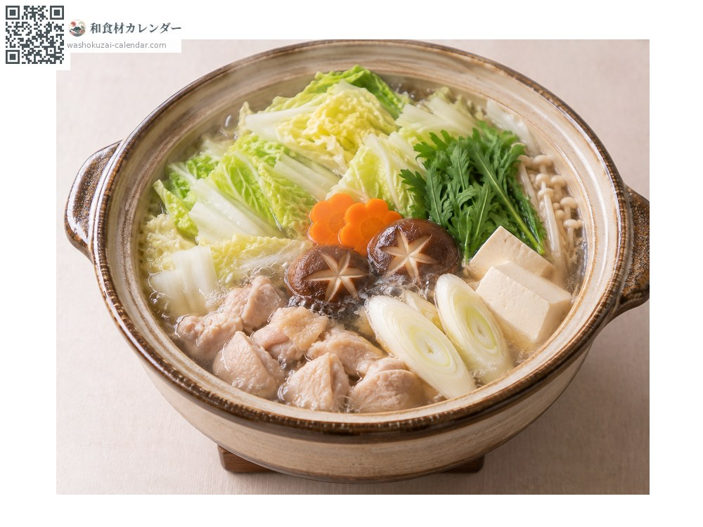
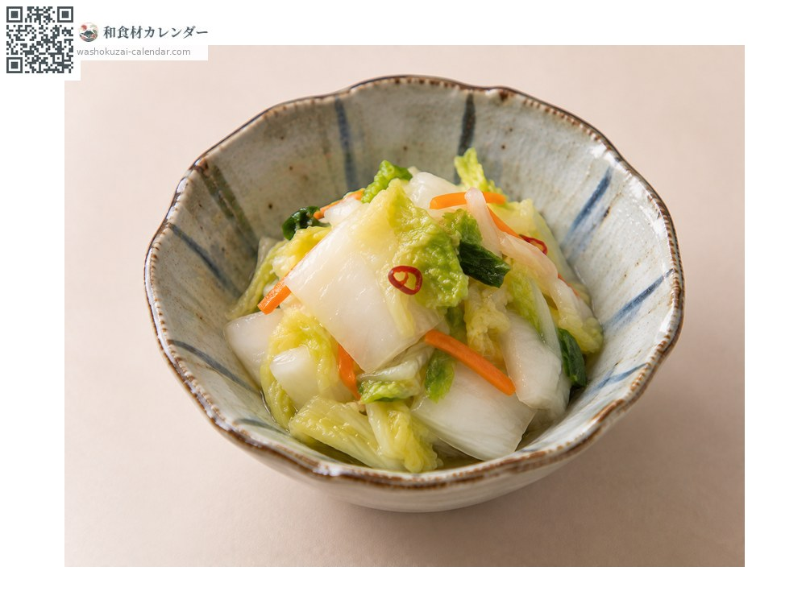
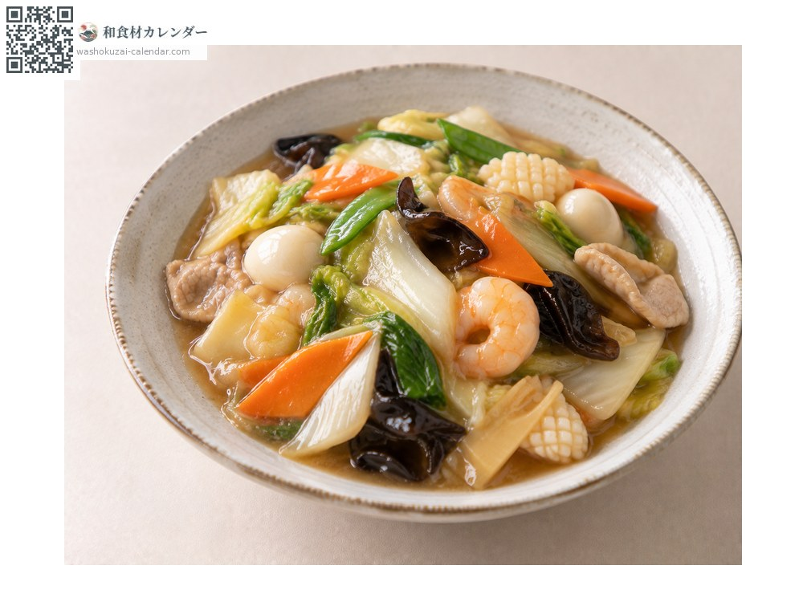
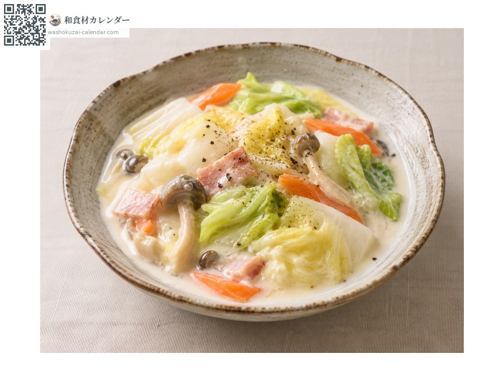

ผัก
ผักกาดขาว
ハクサイ はくさい hakusai
ชื่ออื่นhakusai
อร่อยที่สุดในเดือน ม.ค., ก.พ., พ.ย., ธ.ค.

ช่วงที่อร่อยที่สุด
ม.ค.
ก.พ.
มี.ค.
เม.ย.
พ.ค.
มิ.ย.
ก.ค.
ส.ค.
ก.ย.
ต.ค.
พ.ย.
ธ.ค.
ช่วงอร่อยที่สุดมีจำหน่าย
วิธีปรุง

หม้อไฟ
ดูดซับน้ำซุปแล้วหวานขึ้น

ผักดองญี่ปุ่น
ทำผักดองเกลือหรือกิมจิ

ผัดผักรวมราดน้ำข้น
ใช้ผัด

ตุ๋นซอสครีม
พอโดนความร้อนจะหวาน
วิธีเลือก
ยกแล้วหนักและม้วนแน่น รอยตัดสีขาวสดชื่น จุดดำเล็ก ๆ ไม่มีผลต่อคุณภาพ
วิธีเก็บรักษา
ทั้งหัวให้ห่อกระดาษหนังสือพิมพ์แล้วตั้งไว้ที่มืดเย็น ถ้าผ่าแล้วจะเสียจากรอยตัด ควรแช่เย็น
แหล่งผลิตหลัก
เกร็ดน่ารู้
เมื่อโดนน้ำค้างแข็งจะสะสมน้ำตาลเพื่อไม่ให้แข็งตัว ยิ่งหนาวยิ่งหวาน
วัตถุดิบที่อร่อยที่สุดในช่วงเดียวกัน
 ดอกตูมฟุกิ
ดอกตูมฟุกิ ดอกผักกาดก้านอ่อน
ดอกผักกาดก้านอ่อน เซริ (ผักชีล้อมญี่ปุ่น)
เซริ (ผักชีล้อมญี่ปุ่น) กะหล่ำปลี
กะหล่ำปลี กะหล่ำดาว
กะหล่ำดาว บรอกโคลี
บรอกโคลี ดอกกะหล่ำ
ดอกกะหล่ำ ผักโขมญี่ปุ่น
ผักโขมญี่ปุ่น